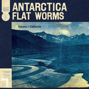
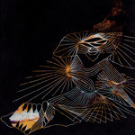
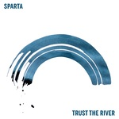

Quick Takes (April/May 2020)
Hi everyone, and welcome to our latest installment of Quick Takes!
We took a break last month, but now we're back and we're bigger than ever. Well, not quite—I was long overdue a break, so this month, it's mostly playing catch-up with some albums that caught my attention during the last two months (including Eve Owen's stellar debut). Mark, Sean, and Ethan also contributed some picks. There's plenty to choose from, and you absolutely can't go wrong with any of these even if the quality of each varies somewhat.
What were your favorite albums during April and May? Anything we didn't get to review that we should've? You can always reach us on Facebook, Instagram, or our official Twitter page.
...
Austra
HiRUDiN
(Domino)
Don't let the head-scratching album title fool you. Austra's fourth studio album is named after a peptide in the salivary glands of blood-sucking leeches, which is a very artistic way of saying that relationships can be a drag. These high concepts come second nature to Katie Stelmanis, who previously wrote about the murky relationship between environmentalism and technology in 2017's Future Politics. Here, Stelmanis eases her previous album's four-on-the-floor dance beats and builds upon off-center synth arrangements with hints of classical music (even if they feel commonplace when compared to the rest of her body of work). She's a vibrant presence on Anywayz and How Did You Know, pushing her operatic vocals over soaring, anthemic choruses. But that's not enough to save an album that, despite sounding so busy and hectic, fails to generate much excitement—even if Stelmanis' emotional downward spiral is compelling in the lyrical sense. [6/10] Juan Edgardo Rodríguez
 Eve Owen
Eve Owen
Don't Let the Ink Dry
(37d03d)
Don't Let the Ink Dry was a difficult album to make for Eve Owen. The London singer-songwriter wasn't in a good mental state during the recording of her debut album, struggling with her confidence while also dropping out of school and discovering she had Asperger's syndrome. It's a lot to take in for the 20-year-old, who confronts all her demons head-on through haunting, intricate folk songs in the vein of artists like Jesca Hoop, Laura Veirs, and even early Sharon Van Etten. But Owen is a formidable talent in her own right—as For Redemption and After the Love show, she has a firm grasp of how she layers her fingerpicked compositions over each song's dark ambient soundscapes. On So Still for You, she wishes to find herself against a partner's wishes as she lays out a placid country-rock melody. Owen makes it look easy with her articulate songwriting—and though taking many cues from The National's Aaron Dessner (who produced the album) in sonic terms, she deftly controls her somber arrangements with a depth that is wise beyond her years. [8/10] Juan Edgardo Rodríguez
EZRAT
Carousel
(self-released)
After two excellent releases under NYC label tastemakers Captured Tracks, ex-Brooklyn trio EZTV never quite stood a chance. Coming around during a time when laptop enthusiasts were trying to save rock n' roll from total extinction with programming software, the Ezra Tenenbaum-led band were writing soaring jangle/power-pop songs that stood adjacent to all the noise. It's hard to say who ultimately won that war, but there's always a place for guitars—and Tenenbaum, alongside former drummer Michael Stasiak, quietly reformed under the name Ezrat with a little help from their friends. They describe their new project as a "simple twist of lemon" on their Bandcamp page, and there's some truth to that—on songs like Yellow Flowers and Distortions, Tenenbaum shares like-minded stories of romantic dissolution and afternoon ennui over gently-strummed melodies. But there's also a looseness to their debut album, Carousel, that implies Ezrat wanted to broaden their scope, like on Daydream, where the band incorporates light jazzy elements and horns over Tenenbaum's soft-spoken vocal delivery. The elegantly composed Loud Sounds is anything but raucous, allowing Tenenbaum and his cohorts to follow the sunshine pop-meets-baroque approach of sixties bands like The Left Banke and The Peppermint Trolly Company. Unlike those groups, though, let's hope that Ezrat manages to artistically flourish rather than remain in obscurity until an archival record label features them on some compilation in thirty-years' time. [7/10] Juan Edgardo Rodríguez
Flat Worms
Antarctica
(God? Records)
Flat Worms, an Angelino post-Aughts indie rock group with a propulsive bass throb and a propensity for dissonant drama, has released their third album, Antarctica. The place itself is meant to invoke a sense of isolation; an allegory not too far removed from where people find themselves of late. Comparable to the recent guitar-oriented trips generated by bands like Parquet Courts and Protomartyr, Flat Worms lead into this listen with the anthemic track The Aughts, a solid grab that’s invigorated by the up-tempo sway of Plaster Casts and the single Market Forces. It’s a strong cluster of songs slowed up by the title track and the strangled frets of Via, the point at which Antarctica loses some of its steam. Recorded by Steve Albini, the Shellac’ish touches of The Mine, the sturdy Wet Concrete, and the album’s finale, Terms of Visitation, provide plenty for listeners to enjoy. But, Antarctica, itself a seldom-visited location, is rife with ground that’s already been well-traveled. [6/10] Sean Caldwell
GRID
Decomposing Force
(NNA Tapes)
The improvised discordance captured within the grooves of Decomposing Force, a four-track treatise to violent jazz performed by GRID, meets somewhere between Albert Ayler, Jooklo Duo, and Prurient. GRID, sax player Matt Nelson (Battle Trance; Elder Ones), bassist Tim Dahl (Child Abuse; Lydia Lunch Retrovirus), and drummer Nick Podgurski (New Firmament; Feast of the Epiphany) pull the free jazz idiom (if such a word can be applied to a structureless artform) into an electrified maelstrom of power electronics and percussive arrhythmia. The immediately aggressive Brutal Kings’ rampant instrumentation is as minimalist as this album gets, chunky bass scrubs and wild-sax noodling sounds that eventually devolve into something close to the dueling array of distorted scrapes, swipes, and rapid pulsars that comprise Nythynge. The Weight of Literacy comes dangerously close to rhythmic alignment, airy drones, and faraway brass, adding shiver to tension as the volume increases. Cold Sleep swells with dissonance, atonal buzz, and howl stretching across its 12-minute runtime as the occasional bump of stick-to-drum caps off GRID’s textural explorations. Sean Caldwell
Kehlani
It Was Good Until It Wasn't
(TSNMI/Atlantic)
On Kehlani’s best song, Distraction, she summarized what was so appealing about her breezy, sleek style in the past. Her memorable vocals combined nicely with a skittering beat to tell a story about a sunny fling. It was appealing as a lovely pop song with a great hook; a distraction. With her sophomore record, It Was Good Until It Wasn’t, Kehlani replaces any hint of controlled pop presence with a lowkey, gloomy vibe that doesn’t suit her strengths at all. Her raspy voice is now placed upon liquid synth bass and irritating trap production, leaving her songwriting to be the record’s only strength. The slinky Water feels less sexy than depressing, with dark pianos and bothersome percussion distracting from anything Kehlani was doing well. The album’s strongest streak starts with the smooth Hate the Club and concludes on the brief F&MU, but even with those momentary highs, the album doesn’t stick in any cohesive way. It feels slapdash and disorganized in the way a lot of Kehlani’s material has, but this is even worse than usual. [5/10] Ethan Gordon
 Shannon Lay
Shannon Lay
Live at Zebulon
(Sub Pop)
By all accounts, L.A. based singer-songwriter Shannon Lay had a great 2019. She signed to Sub Pop and released her third solo album, August, managed to pull off a pre-COVID U.S. and European tour, and at the dawn of the new decade, was able to amicably split from her longtime band, Feels. Of course, 2020 is a different matter altogether, but Lay has kept herself busy with numerous livestream events, a full-length tour videologue, and most importantly, a quietly released live album, Live At Zebulon. The album pulls from all three of her solo albums as well as some select covers. The two songs pulled from her debut album are particularly impressive here (Parked is a dolorous delight), showing the depth of her ability from early on. As she did in August, Lay shows herself as a more than capable bandleader, with Mikal Cronin joining in on sax for at least one song. Live At Zebulon is at its best the further it strays from Lay’s more mystical early leanings and shows a depth and warmth even in the simplest of songs. Case in point is her band’s full-throated chorus on a reworked cover of Black Box’s Euro-pop hit Everybody, Everybody as the album’s closer. As good a spot as any to get on board. [8/10] Mark Moody
Sparta
Trust the River
(Dine Alone Records)
Even at their most accomplished, Sparta struggled to stand apart from their El Paso counterparts At the Drive-In and The Mars Volta. The Jim Ward-led post-hardcore band was by far the most tuneful and potentially commercial out of all three; too "pop" by comparison, if you will, causing that collective rabid fanbase to split up for good and never to return. Ward was content with following his own heart, even going as far as pursuing a folk/alt-country project (Sleepercar) that didn't quite reach a larger audience because it was too inward-looking. Fourteen years later, Ward felt the time was right to revive the Sparta name once he realized that songs like Cat Scream and Graveyard Luck followed that band's more visceral side. But Ward's more sensitive songwriting side remains, and all the better for it, as Empty Houses and Turquoise Dream conform to the shimmering guitar dynamics and mid-tempo stompers of previous albums (albeit with more modest production techniques). But at its core, Trust the River raises politically-charged concerns while running another narrative altogether: Ward's artistic growth and creative balance. [7/10] Juan Edgardo Rodríguez
7 June, 2020 - 21:24 — No Ripcord Staff